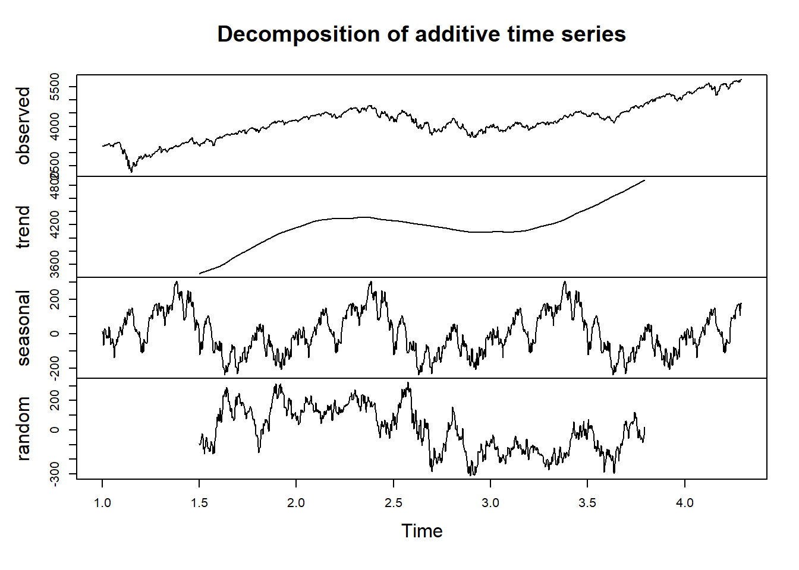
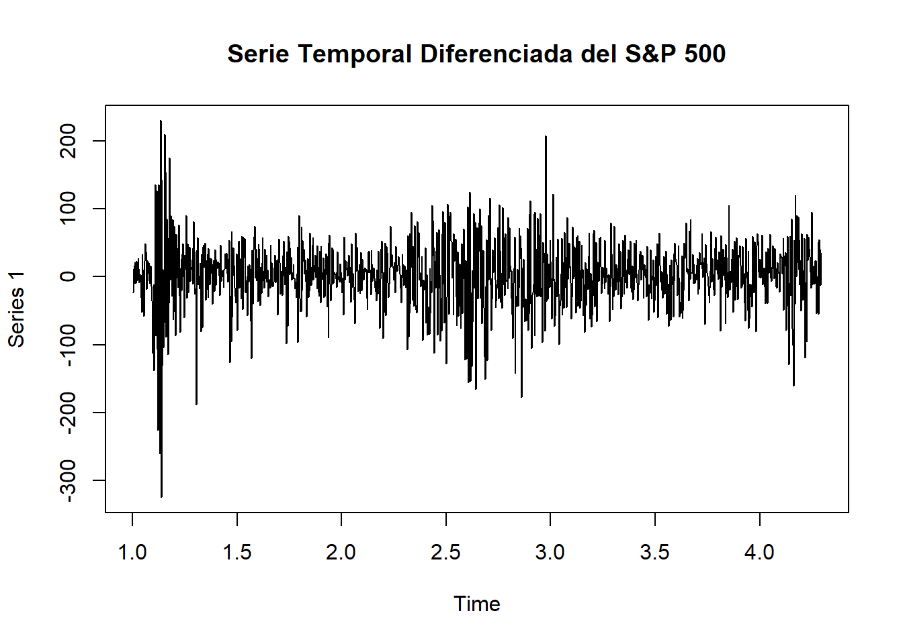

3 Análisis Avanzado de Series de Tiempo
3.1 Descomposición de la Serie de Tiempo
Para el análisis de esta serie de tiempo, se realiza una descomposición aditiva con el fin de identificar y separar los componentes fundamentales: tendencia, estacionalidad y residuo.
Esta descomposición es fundamental para detectar patrones subyacentes y facilita la toma de decisiones sobre la necesidad de aplicar técnicas adicionales, como la diferenciación o transformaciones, para manejar la variabilidad y controlar posibles sesgos en la serie temporal.
# Cargar librerías necesarias
library(xts)
library(forecast)
# Ajusta el argumento frequency
spx_ts <- ts(spx_segment, frequency = 365)
# Descomposición de la serie
decomposed_spx <- decompose(spx_ts)
# Graficar los componentes
plot(decomposed_spx)
La serie temporal del S&P 500 fue descompuesta en sus componentes principales para identificar y analizar su estructura subyacente. A continuación, se describen cada uno de los componentes y la información que aporta al análisis:
Observed (Observado): Este componente representa los valores reales de la serie temporal, incluyendo todas las variaciones de tendencia, estacionariedad y ruido. En esta serie observada, se destaca un comportamiento al alza, especialmente hacia el final del período analizado, lo cual es consistente con la tendencia del S&P 500 en el tiempo.
Trend (Tendencia): El componente de tendencia refleja el cambio general de nivel en la serie a lo largo del tiempo. En este caso, la tendencia muestra un crecimiento estable, con una ligera aceleración hacia el final del período. Este componente es clave para identificar cambios de nivel en el mercado y observar patrones de crecimiento o decrecimiento en el índice.
Seasonal (Estacionariedad): La estacionariedad captura patrones repetitivos que ocurren en intervalos específicos. En el caso del S&P 500, se observan fluctuaciones periódicas, lo que indica la presencia de Estacionariedad en el comportamiento de la serie. Este componente es relevante para comprender ciclos repetitivos que pueden estar asociados a factores estacionales o eventos recurrentes en el mercado.
Random (Ruido): El componente de ruido representa la variabilidad que no puede ser explicada por la tendencia ni por la estacionariedad. En esta serie, se observa una alta variabilidad en el componente de ruido, lo cual sugiere la influencia de factores externos y cambios impredecibles que afectan el mercado. Este componente es especialmente importante para entender la cantidad de incertidumbre o volatilidad en el índice.
3.2 Estacionariedad
Para evaluar la estacionariedad de la serie temporal del S&P 500, se realizó la prueba de Dickey-Fuller Aumentado (ADF). Esta prueba estadística es utilizada comúnmente en series temporales para determinar si una serie es estacionaria, es decir, si sus propiedades estadísticas, como la media y la varianza, son constantes en el tiempo.
El procedimiento es el siguiente:
Aplicación del Test: El test de Dickey-Fuller evalúa la hipótesis nula de que la serie no es estacionaria. Si el p-valor de la prueba es menor que 0.05, se rechaza la hipótesis nula, lo que indica que la serie es estacionaria.
Interpretación de Resultados:
Si el p-valor es menor que 0.05, se concluye que la serie es estacionaria, y no sería necesario aplicar transformaciones adicionales para estabilizarla. Si el p-valor es mayor que 0.05, se indica que la serie no es estacionaria, por lo que podría ser necesario aplicar una diferenciación para eliminar la tendencia y estabilizar la media de la serie. La aplicación de esta prueba permite tomar decisiones informadas sobre el tratamiento de la serie temporal y la necesidad de realizar ajustes adicionales para mejorar la precisión de los análisis y modelos de pronóstico.
# Cargar la librería necesaria
library(tseries)
# Realizar el test de Dickey-Fuller aumentado (ADF)
adf_test <- adf.test(spx_ts, alternative = "stationary")
# Imprimir los resultados
print(adf_test)##
## Augmented Dickey-Fuller Test
##
## data: spx_ts
## Dickey-Fuller = -1.7067, Lag order = 10, p-value = 0.7025
## alternative hypothesis: stationaryEl resultado de la prueba de Dickey-Fuller Aumentado (ADF) muestra un p-valor de 0.7025, el cual es significativamente mayor que el umbral de 0.05. Esto implica que no se rechaza la hipótesis nula, lo que indica que la serie temporal del S&P 500 no es estacionaria.
Dado que la serie no es estacionaria, será necesario aplicar una diferenciación para estabilizar la media y remover la tendencia presente en la serie. Esta diferenciación ayudará a que las propiedades estadísticas de la serie se mantengan constantes en el tiempo, lo cual es esencial para construir modelos de pronóstico precisos y evitar resultados sesgados debido a la presencia de una tendencia.
3.3 Diferenciación de la Serie
Para estabilizar la media y eliminar la tendencia de la serie temporal del S&P 500, se aplicó una diferenciación de primer orden.
# Aplicar una diferenciación de primer orden
diff_spx <- diff(spx_ts)
# Graficar la serie diferenciada para verificar los resultados
plot(diff_spx, main="Serie Temporal Diferenciada del S&P 500")
La gráfica resultante muestra que, tras esta diferenciación, la serie oscila alrededor de un valor cercano a cero, lo cual indica que la tendencia fue efectivamente removida. Esto sugiere que la serie es ahora más adecuada para análisis posteriores, ya que presenta una media estable y se ha eliminado la tendencia a largo plazo que estaba presente en la serie original.
3.4 Transformación para Control de Tendencia y Variabilidad
Antes de proceder con algún tipo de transformación se realiza nuevamente la validación de estacionariedad luego de diferenciación de la serie.
# Realizar el test de Dickey-Fuller en la serie diferenciada
adf_test_diff <- adf.test(diff_spx, alternative = "stationary")
# Imprimir los resultados
print(adf_test_diff)##
## Augmented Dickey-Fuller Test
##
## data: diff_spx
## Dickey-Fuller = -10.04, Lag order = 10, p-value = 0.01
## alternative hypothesis: stationaryEl resultado del test de Dickey-Fuller en la serie diferenciada muestra un p-valor de 0.01, el cual es menor que el umbral de 0.05. Esto implica que se rechaza la hipótesis nula y, por lo tanto, la serie diferenciada es estacionaria.
Dado que la serie temporal del S&P 500, después de la diferenciación de primer orden, muestra estacionariedad con una media constante y no presenta una variabilidad creciente a lo largo del tiempo, se concluye que no es necesario aplicar transformaciones adicionales para estabilizar la varianza. La diferenciación realizada fue suficiente para remover la tendencia y estabilizar la media, lo cual asegura que la serie se encuentra en condiciones adecuadas para ser analizada sin introducir distorsiones adicionales en los datos. Las transformaciones, como logaritmos o raíces cuadradas, suelen emplearse cuando existe una varianza creciente o fluctuaciones amplias, características que no se observan en esta serie diferenciada.
3.5 Conclusiones
Descomposición de la Serie: La descomposición de la serie temporal del S&P 500 permitió identificar los componentes de tendencia, Estacionariedad y ruido. Esto ayudó a separar los patrones subyacentes en la serie y facilitó el análisis detallado de cada uno.
Verificación de Estacionariedad: La prueba de Dickey-Fuller aplicada a la serie original confirmó que la serie no era estacionaria, lo cual hizo necesaria la aplicación de una diferenciación de primer orden para estabilizar la media y remover la tendencia.
Aplicación de Diferenciación: Tras aplicar la diferenciación de primer orden, la serie temporal mostró un comportamiento estacionario, lo cual fue confirmado mediante una segunda prueba de Dickey-Fuller. La serie diferenciada no presenta tendencia y oscila alrededor de una media constante.
No Necesidad de Transformaciones Adicionales: Debido a que la serie diferenciada no muestra problemas de varianza creciente, se concluye que no es necesario aplicar transformaciones adicionales para estabilizar la variabilidad. La serie está en condiciones adecuadas para análisis posteriores o para su inclusión en modelos de pronóstico.